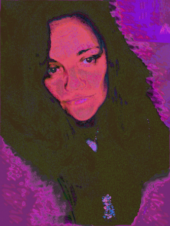
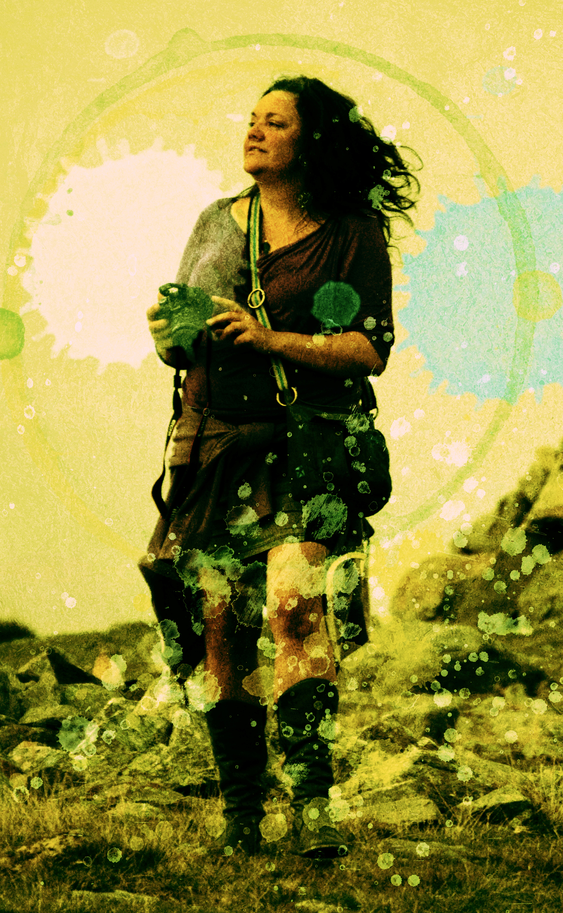

My work is heavily influenced by the ideas to which I have been exposed in studying Mathematics and Physics. I am fascinated by interfaces, the spaces in between and the places where discrete items meet. Moments in time, a pixel becoming an image, a surface changing from one finish to another, the packets of energy between all things are all concepts which drive me to creation. Glass plays with our perception of depth and dimension and patterns distort smooth 3D surfaces changing them as we change.
My faces always have some sort of strange goings on in their heads and this reflects the inner workings of our infinitely varied minds and our very different perceptions of reality. They change from day to day, because the expressions are subtle, one can read into them different things depending on mood, light and setting. I keep coming back to the human figure; the figurative is like a meta material that one can use to express many different concepts and emotions at once.

Almost obsessed with detail and yet with a different idea every moment my expression helps tap the power of my mind and direct it. I can explore concepts which are difficult in Physics through the use of artistic expression. This is perhaps the way that ancient man, before the advent of modern Mathematics, explored these esoteric ideas but now we can bring all of these methods of exploration and interpretation together.
Outside spaces provide a constantly changing environment challenging the artist to make items which are consistent in time. By being sympathetic within outdoor spaces I aim to harmonise with the natural world and use its mutating qualities to the advantage of each piece.
The use of the virtual environment and software to produce art explodes the possibilities for creation and offers concrete solutions to design problems when the concept is of utmost importance. Like many programmers I think that software is very artistic and probably one of the most exciting mediums of our age.
